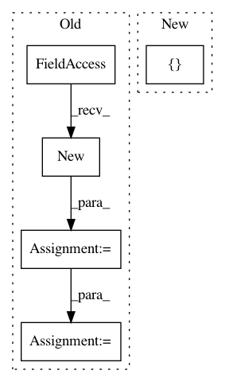

7b205efea6b504de04311bc55d109cd28d8f3e0c,OpenNMT/preprocess.py,,makeVocabulary,#Any#Any#,44
Before Change
onmt.Constants.BOS_WORD, onmt.Constants.EOS_WORD})
featuresVocabs = []
reader = onmt.utils.FileReader.new(filename)
while True:
sent = reader.next()
if sent is None:
break
words, features, numFeatures = onmt.utils.Features.extract(sent)
After Change
def makeVocabulary(filename, size):
wordVocab = onmt.utils.Dict(
[onmt.Constants.PAD_WORD, onmt.Constants.UNK_WORD,
onmt.Constants.BOS_WORD, onmt.Constants.EOS_WORD])
featuresVocabs = []
with open(filename) as f:
In pattern: SUPERPATTERN
Frequency: 4
Non-data size: 5
Instances
Project Name: pytorch/examples
Commit Name: 7b205efea6b504de04311bc55d109cd28d8f3e0c
Time: 2016-12-21
Author: alerer@fb.com
File Name: OpenNMT/preprocess.py
Class Name:
Method Name: makeVocabulary
Project Name: mozilla/TTS
Commit Name: 5750090fcd4a6718608c7357e3890f5b2a545ae0
Time: 2018-03-22
Author: egolge@mozilla.com
File Name: layers/tacotron.py
Class Name: Decoder
Method Name: forward
Project Name: pytorch/examples
Commit Name: 645c7c386e62d2fb1d50f4621c1a52645a13869f
Time: 2018-04-24
Author: soumith@gmail.com
File Name: fast_neural_style/neural_style/utils.py
Class Name:
Method Name: normalize_batch